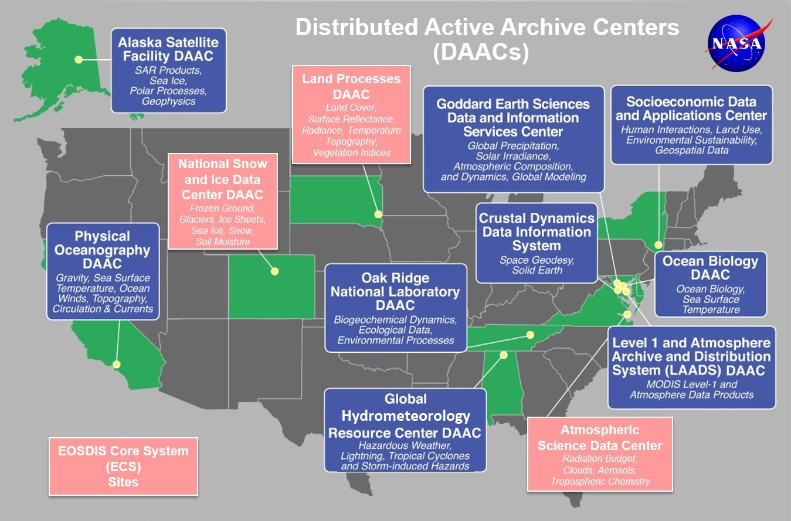

ICESat-2 Data Discovery, Visualization, and Access Resources
Contents
ICESat-2 Data Discovery, Visualization, and Access Resources¶
Credits
Notebook by: Amy Steiker, Jessica Scheick, and Mikala Beig
Source material: NSIDC DAAC Data Tutorials by Amy Steiker
Objectives¶
Explore the options and relationships between web-based and programmatic data search, visualization, and access methods.
Explore cloud hosted ICESat-2 data using Earthdata Search, and retrieve data endpoints for download and direct S3 access.
Visualize ICESat-2 data using OpenAltimetry.
Reach out to us with data discovery and access questions! Real people read the emails sent to nsidc@nsidc.org. We are here to help make sure you get the data you need for your analysis.
ICESat-2 2022 Hackweek participants have been given temporary early access to select cloud-hosted ICESat-2 data sets by NSIDC (ATL03, ATL06, ATL07, ATL08, ATL10). These data are not publicly available. Please see the Terms of Use pdf in the ICESat-2 Resources folder in the hack week Jupyter book.
Conditions of Use
The NSIDC DAAC Earthdata Cloud system is in development and is not fully operational.
The system should not be used for operational purposes.
The system does not have the same capabilities as the current, operational DAAC system.
While the system has been quite stable and reliable, it is subject to changes, delays, downtime, and inconsistencies in behavior.
NSIDC DAAC is actively ingesting data into the NSIDC DAAC Earthdata Cloud system. The data available may not represent the latest version or the entire time series of the data product.
Support for accessing and working with the Early Access NSIDC DAAC data in the Earthdata Cloud system is limited.
Response time to questions is variable.
Dedicated, operational support staff are not supporting Early Access users.
Early access for ICESat-2 2022 Hackweek participants will end on April 30, 2022.
Resources and mechanisms available for ICESat-2 data exploration¶
There are numerous interactive, web-based, command line, and programmatic ways to access, visualize, and perform subsetting and other customizations on ICESat-2 data. There are a lot of options and it can feel confusing at first! The following table includes a handful that will be used this week, but is by no means exhaustive.
img_path= './img/discovery_and_access_methods.png'
from IPython.display import Image
Image(img_path)
NASA National Snow and Ice Data Center Distributed Active Archive Center (NSIDC DAAC)¶
The National Snow and Ice Data Center provides over 1100 data sets covering the Earth’s cryosphere and more, all of which are available to the public free of charge. Beyond providing these data, NSIDC creates tools for data access, supports data users, performs scientific research, and educates the public about the cryosphere.
{kind=link}
ICESat-2 Data Discovery Resources at nsidc.org:¶
The NSIDC ICESat-2 home page provides an overview of the data products and user resources available.
Associated access, visualization, and data customization tools and services are provided on the ICESat-2 Tools page.
ICESat-2 landing pages: Each data set has an associated landing page with citation information, a curated user guide, and support documentation.
img_path= './img/ATL06_landing_page.png'
Image(img_path)
ICESat-2 Data Access Resources at nsidc.org:¶
ICESat-2 tutorials and webinars:
ICESat-2 landing pages: In addition to the documentation resources listed above, landing pages also offer the ability to access data by time, spatial region, and granule name. Below is a screen shot of the Download Data tab available on all ICESat-2 landing pages.
ICESat-2 customization services: The NSIDC DAAC supports customization (subsetting, reformatting, reprojection) services on many NASA Earthdata mission collections including ICESat-2.
Programmatic data access: The NSIDC DAAC provides an API to access and customize data. See NSIDC’s Programmatic Access Guide for more information. The NSIDC-Data-Access-Notebook provides an easy-to-use Jupyter notebook to search and access data programmatically.
Data Exploration in Earthdata Search¶
https://search.earthdata.nasa.gov/search
Earthdata Search provides a graphical user interface for discovery NASA data and ordering and downloading data from its various archive locations.
Key Functions of Earthdata Search:
Web mapping interface for discovering and visualizing NASA Earthdata using spatial and temporal filters.
Customization services, including spatial subsetting, reformatting, and reprojection for some datasets.
Data ordering and downloading.
NASA Webinar on Earthdata Search by Mark Reese, Earthdata Search Product Owner.
Data Exploration in OpenAltimetry¶
OpenAltimetry is a cyberinfrastructure platform for discovery, access, and visualization of data from NASA’s ICESat and ICESat-2 missions. The unique data from these missions require a new paradigm for data access and discovery. OpenAltimetry addresses the needs of a diverse scientific community and increases the accessibility and utility of these data for new users. OpenAltimetry is a NASA funded collaborative project between the Scripps Institution of Oceanography, San Diego Supercomputer Center, National Snow and Ice Data Center, and UNAVCO.
Key Functions of OpenAltimetry:
Ground track filtering and visualization
On-the-fly plotting of segment elevations and photon clouds based on date and region of interest
Access data in CSV or subsetted HDF5 format
Plot and analyze photon data from your area of interest using a Jupyter Notebook
OpenAltimetry tutorials:
Presentation on ICESat-2 and OpenAltimetry by NASA science education team.
OpenAltimetry Tutorial by Walt Meier, NSIDC DAAC Scientist.
NASA Earthdata resources¶
The NASA NSIDC DAAC is one of 12 NASA DAAC facilities across the United States, providing access to hundreds of data products in support of cryospheric research, global change detection, and water resource management. The DAACs belong to the NASA Earth Observing System Data and Information System (EOSDIS), and this system includes tools that support data distributed by all DAACs:
-
Customization services from NSIDC are also available through this interface
-
The Common Metadata Repository (CMR) is a high-performance, high-quality, continuously evolving metadata system that catalogs Earth Science data and associated service metadata records. These metadata records are registered, modified, discovered, and accessed through programmatic interfaces leveraging standard protocols and APIs.
Polling question
How do you prefer to search for data prior to downloading files?
This is an open-ended question that is intentionally vague. As we gear up for our projects, how do you plan to begin searching for ICESat-2 data? Maybe you’re interested in finding repeat ground tracks over an area that you’d like to input as a shapefile. Maybe you’re interested in searching for data based on a seasonal date range. Or you want a way to search for ICESat-2 data coincident with another data product. Do you prefer to discover data coverage directly in Python, as opposed to a web interface (or visa versa)?
These are just some ideas to get you thinking about data discovery.
Next up! Programmatic data access via:¶
earthdata¶
earthdata (GitHub) is a software library that provides an easy to use Python wrapper in front of the CMR and NASA DAAC API’s. Strengths of earthdata include:
cross-DAAC data access (it’s not specific to ICESat-2 or NSIDC).
Access to on prem and cloud hosted data.
Easy authentication handling for Earthdata Login and AWS access keys and token.
icepyx¶
icepyx (docs, GitHub) is both a software library and a community composed of ICESat-2 data users, developers, and the scientific community. We are working together to develop a shared library of resources - including existing resources, new code, tutorials, and use-cases/examples - that simplify the process of querying, obtaining, analyzing, and manipulating ICESat-2 datasets to enable scientific discovery.